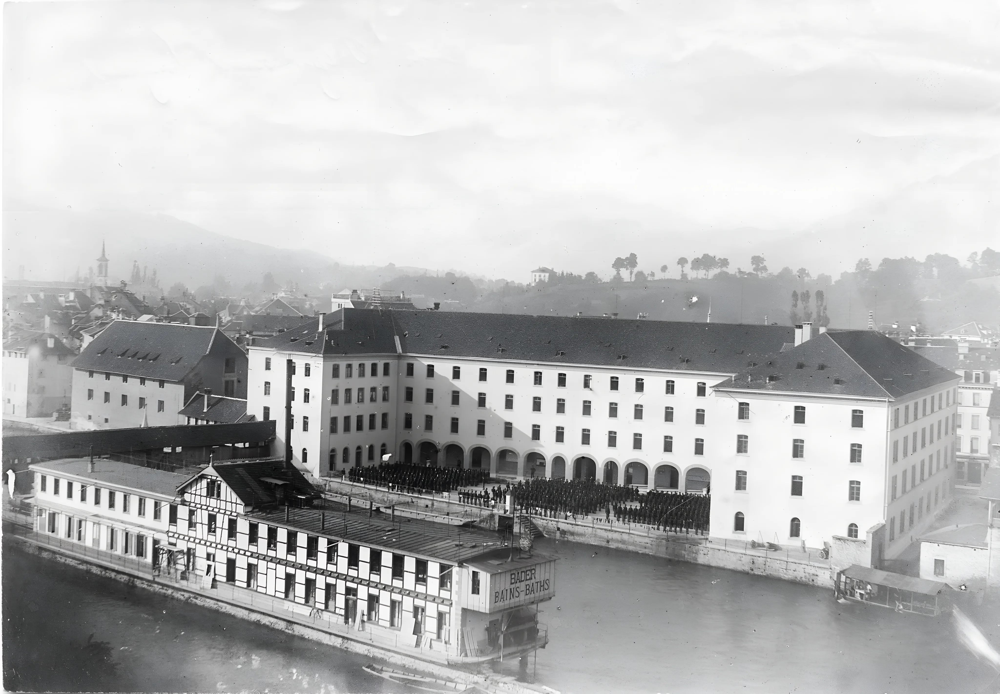
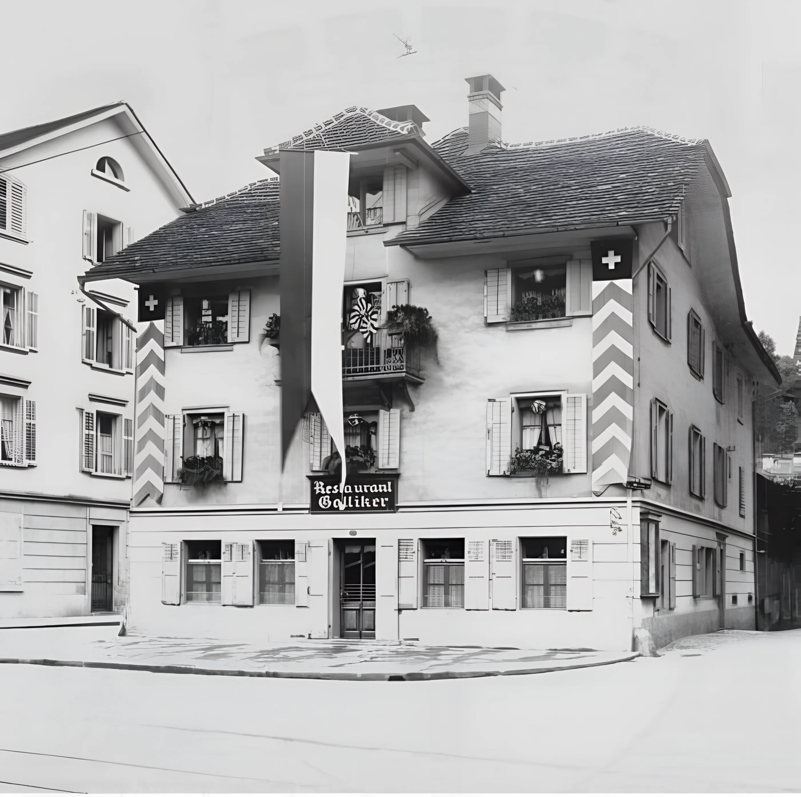
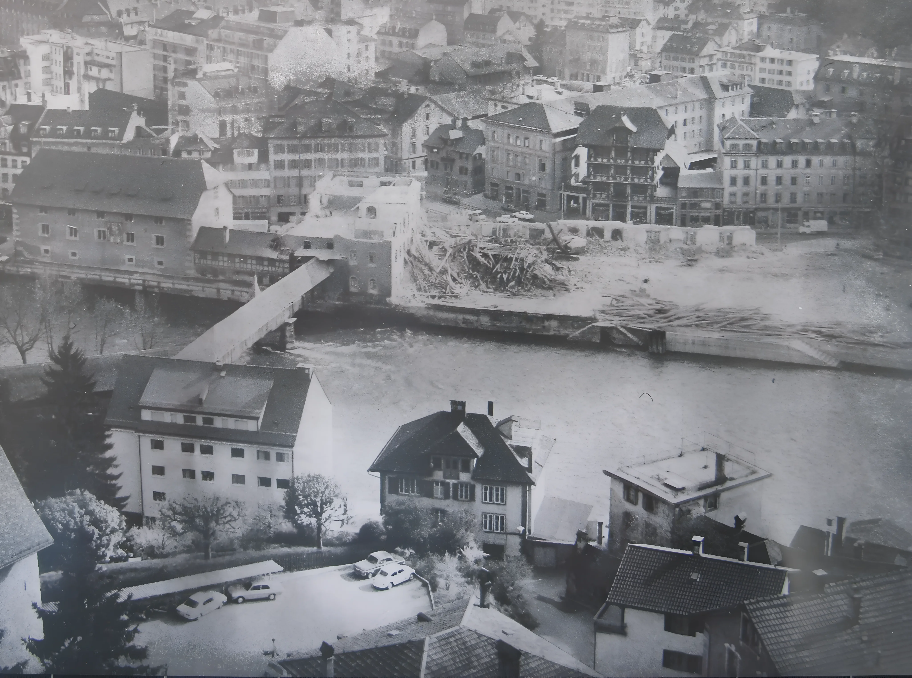

Stadtarchiv LuzernLucerne’s infantry barracks (the large building in the background). In the foreground: the legendary “Mississippi steamboat” on the River Reuss—also later demolished.
Between 1861 and 1863, a three-winged infantry barracks rose on what Lucerne then called the Kurzweilplatz — Leisure Square — a place that until the early 19th century had hosted pig markets, fairs, and travelling circuses. Architect: Johann Kaspar Wolff. Builder: Gustav Mossdorf.
At its peak the barracks housed exactly 1,111 soldiers. The clock built for them in 1862 by Leonz Suter of Kleewäld carried both an hour and a minute hand — unusual for a tower clock of the era. Military drill demanded precision to the minute. The mechanism was half hand-crafted, half industrial: a machine of transition.
Every morning at 08:30, the bell would have sounded across the courtyard and 1,111 men would have moved in response. The clock did not ask. It announced. The body learned to obey before the mind had fully woken. Over 73 years, the 08:30 bell must have sounded roughly 26,000 times.
What did 08:30 sound like when 1,111 men heard it simultaneously — the shuffle of boots, the slow mechanical obedience of a building coming to life on schedule?
The barracks operated as a military institution until 1935. In the 1960s it became a provisional secondary school for the canton. The clock kept time for soldiers and for students, for drill and for lessons. It did not distinguish.
On 5 February 1971, Lucerne's historic Art Nouveau railway station burned to the ground. The station clock stopped at 09:03. It was the largest station fire in Swiss Federal Railways history. The cause was never definitively established.
Two months later the city would lose another of its great 19th-century structures — not by accident, but by plan. The infantry barracks was to be demolished to make way for the Luzern-Zentrum motorway interchange. Lucerne in 1971 was a city clearing itself for the car. The barracks, the old bathhouse on the Reuss — all in the same season of demolition.
Who signed the order for explosive demolition over mechanical dismantling? What calculations were submitted, and to whom?
An emptied building still holds the shape of what it contained. The corridors where 1,111 soldiers marched are now just corridors. The clock face still reads the time for a building with no inhabitants — only a scheduled end.

Galliker restaurant,AI enhanced
Franz Germann, real estate manager of the Cantonal Hospital of Lucerne, is at the restaurant "Galliker" on Kasernenplatz. From his table he can see the barracks. The Sprengmeister — the blasting master — is also there with two assistants. They are having after-work drinks. The building will be detonated the next morning at 08:30.
Germann asks about the fate of the barracks clock. The Sprengmeister replies, lapidary: he could dig it out of the rubble the following day. Germann decides on the spot. He recruits four hospital co-workers and goes immediately to the barracks.
The building was likely already emptied and partially prepared — windows removed, utilities cut — but not yet fully sealed. The 90 kg of explosives had already been placed inside, wired for 08:30. This is the only way to explain how Germann and his team could enter at all. They worked, presumably, with improvised tools, in a building holding its breath.
What exactly did Germann say to four colleagues to convince them to dismantle a clock in a building set to explode the next morning?
Dismantling a tower clock takes hours, not minutes. The mechanism — weights, pendulum, shafts connected to the external face — is all iron, heavy and bolted. They were hospital workers, not clockmakers. They would have worked into the night.
Where did the clock sleep that night, after removal? A hospital storage room? A van? The record is silent for 41 years, until 2012.
Five men in the dark, lifting iron. The clock face turned toward them as they unbolted it — still marking the hour. Outside: the building they were standing inside would not exist by noon the next day.
What time does a clock show when it is being unmade?
At exactly 08:30 on Thursday, 15 April 1971, the 90 kilograms of explosives were detonated. The plan: a controlled implosion — the building falling neatly inward, onto itself.
Something had been miscalculated. Instead of imploding, entire floors collapsed into the street. The VBL trolleybus masts were bent "like matchsticks". Two chestnut trees fell. No one was injured.
The structural failure points to an asymmetric collapse — the intended hinge-line not giving way as calculated. The 1860s masonry behaved differently than the engineers' models had assumed. Witnesses described the scene as wie im Krieg: like in war.
Was there a formal technical inquiry into the miscalculation? What type of explosive was used? The sources do not say.

Stadtarchiv LuzernDemolition photographs
The clock that had told 1,111 soldiers when to wake, when to march — had been removed hours before the building collapsed. The hour it commanded for decades arrived, and found no mechanism to mark it. The bell did not sound. The hands were somewhere else, motionless.
The building exploded into the street in its own time.
Where the barracks stood: today you find the Luzern-Zentrum motorway interchange. The former orphanage — a neoclassical building by Josef Singer — was physically relocated approximately 300 metres east and today houses the Museum of Natural Sciences.
Between 1971 and 2012 — 41 years — what became of the clock? Who stored it, maintained it, knew it existed?
In 2012, the clock collection opened in the Zytturm — Lucerne's medieval time tower, part of the Musegg Wall since 1403, which holds the civic privilege of striking the hour one minute before all church bells in the city. The barracks clock is now one of ten clocks in the exhibition. It is visible. It is intact.
A clock that once commanded 1,111 bodies now sits inside a tower from 1403, watched by tourists. Both objects survived what destroyed everything around them. They measure the same seconds.
Whether they remember differently is a question neither can answer.